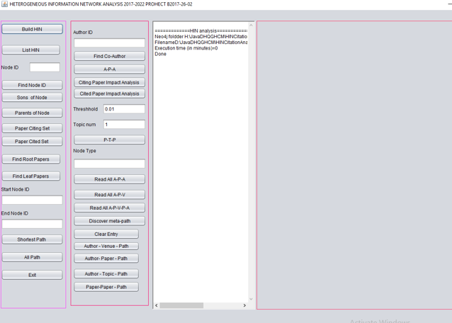
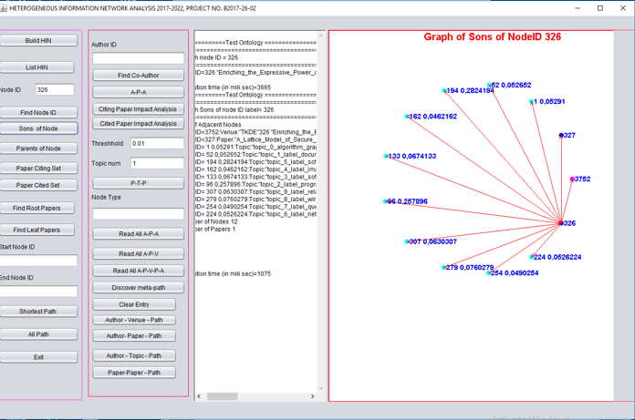
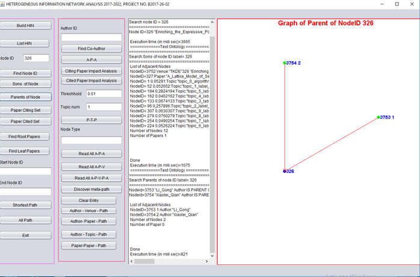
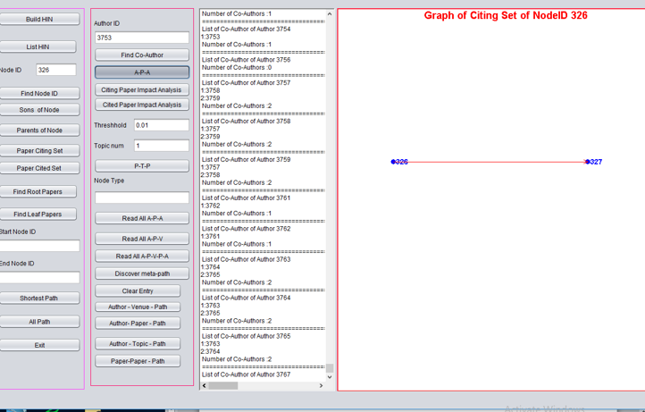
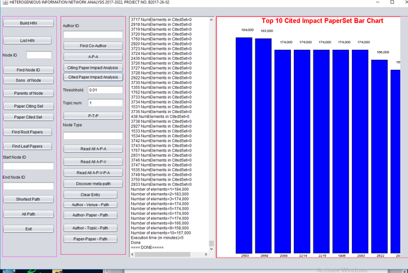

Phân Tích Mạng Thông Tin Không Đồng Nhất

Tạo CSDL Đồ Thị Chứa Mạng Thông Tin Không Đồng Nhất

Hiển Thị Các Node Là Con Của Node Đang Xét

Hiển Thị Các Node Cha

Tìm Các Path Instances Của Meta-Path A-P-A

Phân Tích Tác Động Của Bài Báo